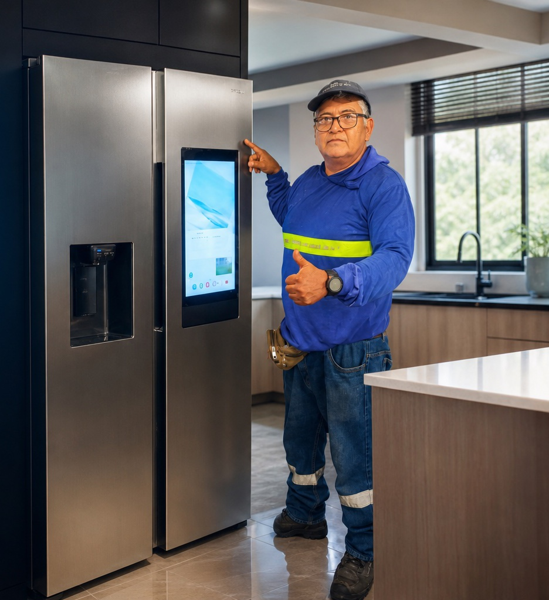
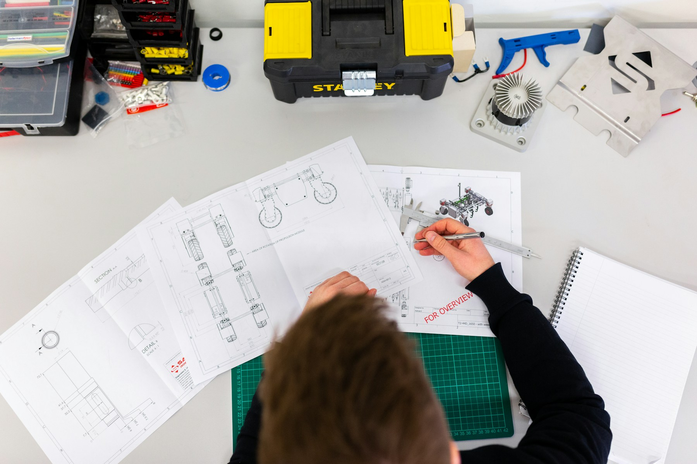

Servicio técnico Guayaquil · Ecuador
Frío bajo
control.
Diagnóstico, mantenimiento y reparación de equipos de refrigeración, climatización y electrodomésticos.

Atención directa
con el técnico
Refrigeración · Mantenimiento · Reparación
Soluciones técnicas
El confort no
puede esperar.
Atendemos cada equipo con criterio técnico, explicaciones claras y una solución pensada para durar.
Refrigeración
Neveras · Congeladores · Mantenimiento preventivo y correctivo
Climatización
Instalación · Desmontaje · Equipos de aire acondicionado 220 VAC
Electrodomésticos
Lavadoras automáticas · Secadoras eléctricas y a gas · Calentadores
Repuestos & equipos
Compra y venta de repuestos · Equipos nuevos y usados

Precisión / Experiencia / RespuestaServicio responsable
Trabajo técnico.
Trato humano.
Desde la primera consulta hasta la puesta en marcha, recibís atención directa del técnico responsable de tu equipo.
Simple y transparente
Así trabajamos.
- 01Contanos qué sucede
Escribinos por WhatsApp. Una foto o video puede ayudarnos a entender el problema.
- 02Coordinamos la visita
Confirmamos tu sector y acordamos el mejor horario para revisar el equipo.
- 03Diagnosticamos
Evaluamos la falla y te explicamos claramente la solución recomendada.
Noreste de Guayaquil
Servicio donde
lo necesitás.
Atención a domicilio en sectores del noreste de Guayaquil y zonas cercanas.
Tu equipo puede volver a funcionar